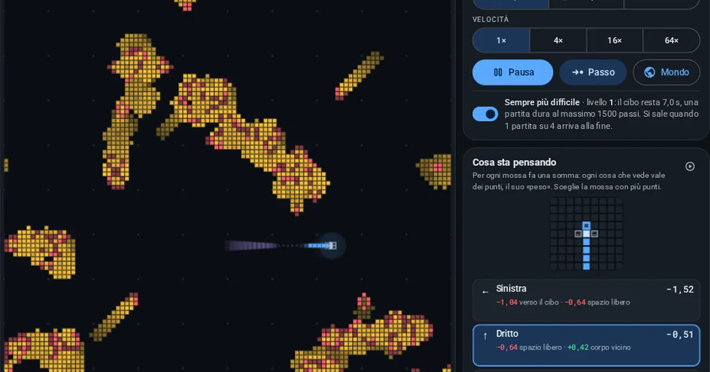

Orfini Math Lab · scheda dell'attività
Snake of Life
Snake of Life: un serpente che impara da solo a sopravvivere nel Gioco della Vita di Conway. Nessuno gli spiega le regole: 16 serpenti per generazione, i migliori fanno figli e il cervello migliora. Per capire evoluzione, intelligenza artificiale e sistemi reali come epidemie, mode ed ecosistemi.

Temi
- Algoritmi genetici
- Automi cellulari
- Coding
- Evoluzione
- Gioco della vita
- Machine learning
- Modelli
- Pensiero computazionale
Competenze (Riforma 2017)
- CIT_4 Competenza digitale
- IND_C2 Sviluppo di simulazioni interattive e visualizzazioni STEM
- MAT_C1 Utilizzare il linguaggio e i metodi propri della matematica per organizzare e rielaborare informazioni
- MAT_C2 Utilizzare strategie del pensiero razionale per affrontare situazioni problematiche in contesti reali
Per prepararti alla verifica
- Snake non è un argomento di verifica, ma allena una cosa che in verifica serve sempre: leggere un grafico.
- Nel grafico Come sta imparando chiediti: cosa c'è sugli assi? Perché la linea del migliore sta sopra quella della media?
- Attenzione: la media e il valore più alto raccontano cose diverse. Il campione può migliorare anche se la media resta bassa.
Prova tu. In cinque generazioni il serpente migliore mangia $2,\ 4,\ 4,\ 7,\ 8$ volte. Qual è la media?
Appunti
Soluzione. $\dfrac{2+4+4+7+8}{5} = \dfrac{25}{5} = 5$.